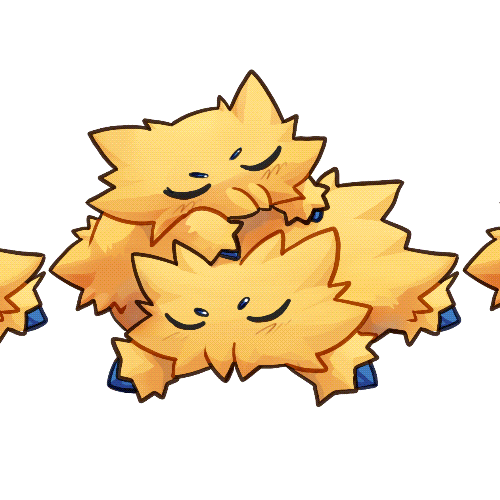

Animated Gif
Program: Photoshop. This was the animated GIF project where I used the tutorial images and a small doodle of a pokemon named Joltik. This was quite challenging, trying to create the looping animation in a program where I had never used the animation feature before. However, I took joy in seeing theme come to life a little. I was severely dissapointed though as for some reason my canva decided to not upload these files as the .GIF files that they are and did not appear as animated images. This was a very big point of struggle. I had the most difficulties with the continuous one, trying to make sure it made sense and didn't look choppy.


return home